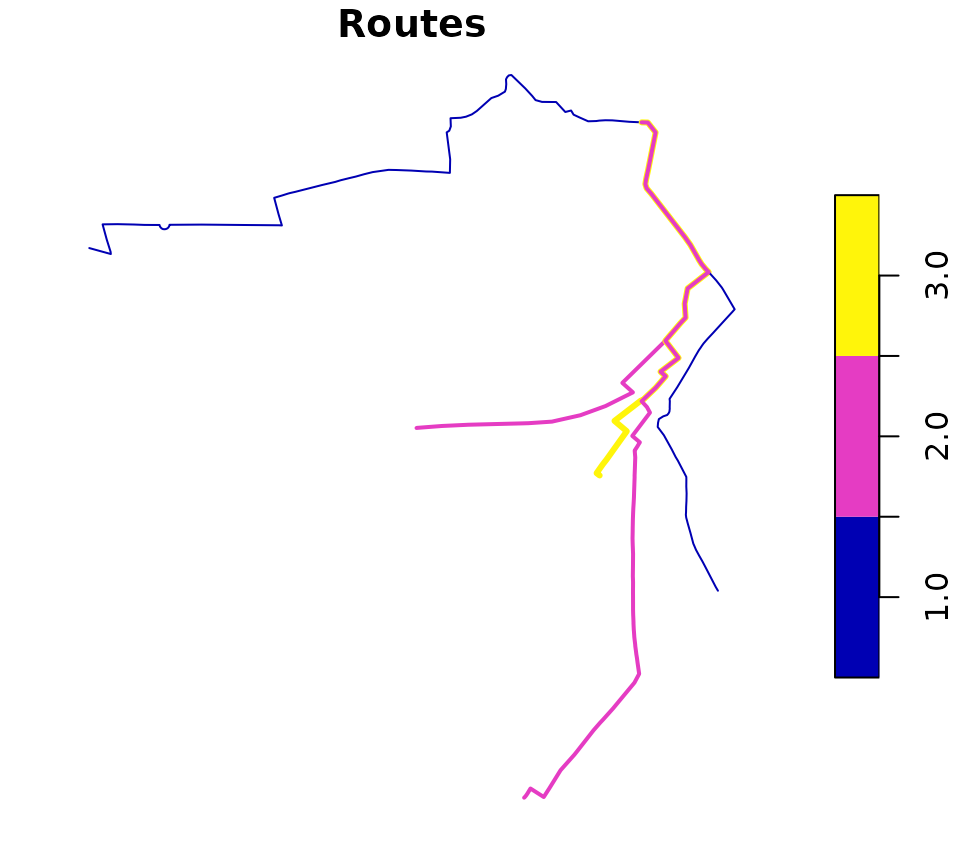
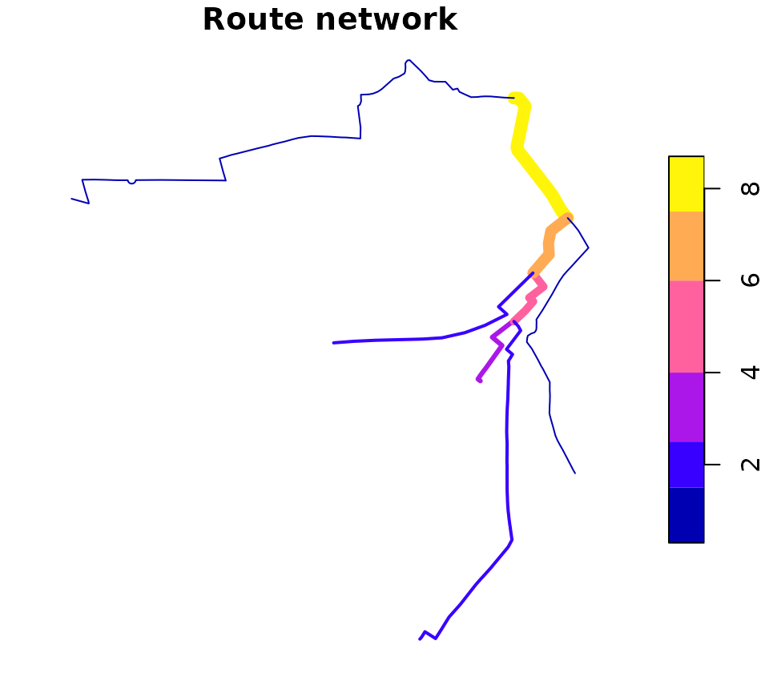

Introduction
Route networks represent the network of highways, cycleways, footways and other ways along which transport happens. You can get route network data from OpenStreetMap (e.g. via the osmdata R package) and other providers or transport network data.
Creating route networks from overlapping routes
Unlike routes, each segment geometry in a route network can only appear once.
stplanr can be used to convert a series of routes into a route network, using the function overline(), as illustrated below:
library(stplanr)
library(sf)
sample_routes <- routes_fast_sf[2:6, 1]
sample_routes$value <- rep(1:3, length.out = 5)
rnet <- overline(sample_routes, attrib = "value")
plot(sample_routes["value"], lwd = sample_routes$value, main = "Routes")
plot(rnet["value"], lwd = rnet$value, main = "Route network")
The above figure shows how overline() breaks the routes into segments with the same values and removes overlapping segments. It is a form of geographic aggregation.
Identifying route network groups
Route networks can be represented as a graph. Usually all segments are connected together, meaning the graph is connected. We can show that very simple network above is connected as follows:
touching_list = st_intersects(sample_routes)
g = igraph::graph.adjlist(touching_list)
#> Warning: `graph.adjlist()` was deprecated in igraph 2.0.0.
#> ℹ Please use `graph_from_adj_list()` instead.
#> This warning is displayed once every 8 hours.
#> Call `lifecycle::last_lifecycle_warnings()` to see where this warning was
#> generated.
igraph::is_connected(g)
#> [1] TRUEA more complex network may not be connected in this way, as shown in the example below:
# piggyback::pb_download_url("r_key_roads_test.Rds")
u = "https://github.com/ropensci/stplanr/releases/download/0.6.0/r_key_roads_test.Rds"
rnet_disconnected = readRDS(url(u))
touching_list = sf::st_intersects(rnet_disconnected)
g = igraph::graph.adjlist(touching_list)
igraph::is_connected(g)
#> [1] FALSE
sf:::plot.sfc_LINESTRING(rnet_disconnected$geometry)
The elements of the network are clearly divided into groups. We can identify these groups as follows:
rnet_disconnected$group = rnet_igroup(rnet_disconnected)Routing on route networks
# plot(rnet$geometry)
# plot(sln_nodes, add = TRUE)
# xy_path <- sum_network_routes(sln = sln, start = xy_nodes[1], end = xy_nodes[2], sumvars = "length")
# # xy_path = sum_network_links(sln = sln, start = xy_nodes[1], end = xy_nodes[2])
# plot(rnet$geometry)
# plot(xy_sf$geometry, add = TRUE)
# plot(xy_path$geometry, add = TRUE, lwd = 5)Adding new nodes
New nodes can be added to the network, although this should be done before the graph representation is created. Imagine we want to create a point half way along the the most westerly route segment in the network, near the coordinates -1.540, 53.826:
Other approaches
Other approaches to working with route networks include:
- sDNA, an open source C++ library for analysing route networks and estimating flows at segments across network segments
- sfnetworks, an R package that provides an alternative igraph/sf spatial network class
- dodgr, an R package providing functions for calculating distances on directed graphs
- cppRouting, a package for routing in C++
- Chapter 10 of Geocomputation with R, which provides context and demonstrates a transport planning workflow in R.